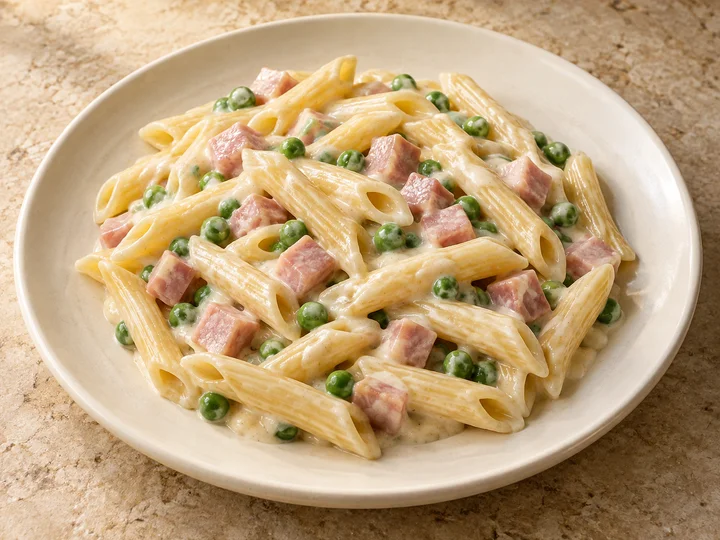
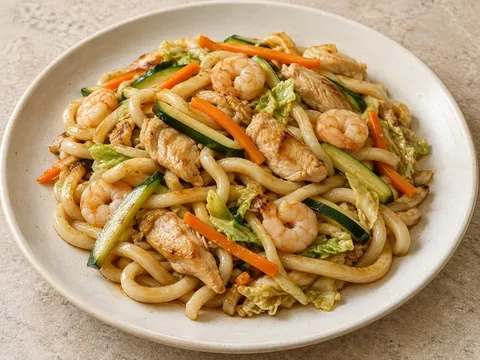
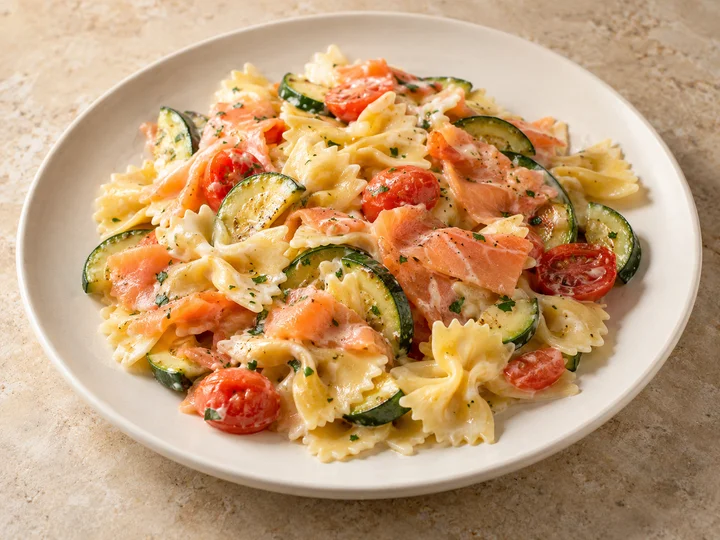
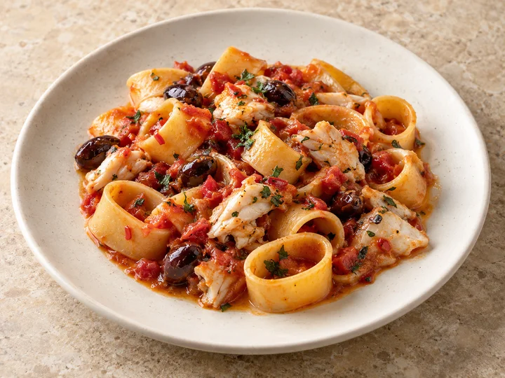
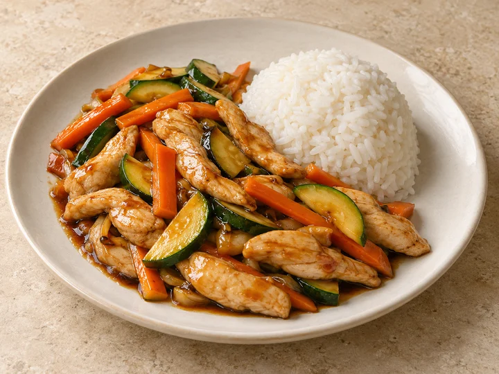
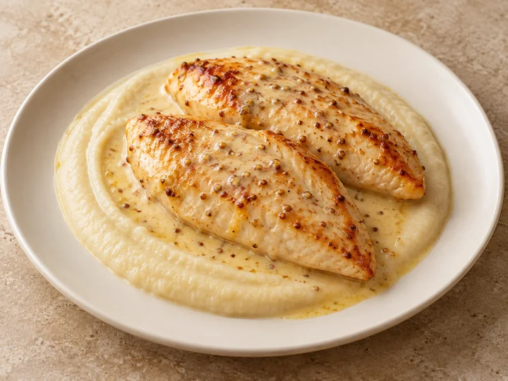
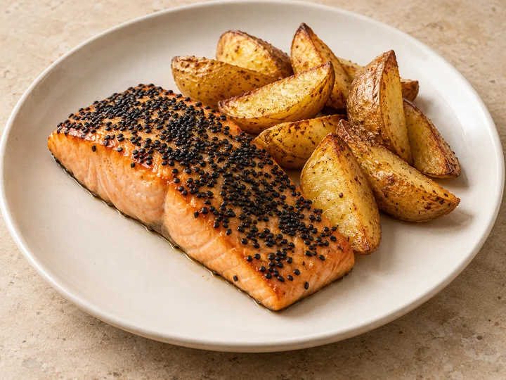

Penne con panna, prosciutto cotto e piselli
Penne con panna, prosciutto cotto e piselli.
0107
Valido solo a pranzo,
nel giorno sotto indicato
Persone indicate nelle richieste via WhatsApp: 0
Dato indicativo: richieste avviate, non prenotazioni confermate. Azzeramento ogni giorno alle 15:00.

Penne con panna, prosciutto cotto e piselli.
0107

Udon con zucchine, carote, verza, gamberetti* e pollo. Allergeni del condimento da confermare con il personale.
0102

Zucchine, pomodorini e salmone affumicato, con poca panna.
010407

Calamarata con orata, pomodoro e olive, dal gusto leggermente piccante.
0104

Pollo, carote e zucchine in salsa di soia, con riso bianco al vapore. Verificare con il personale l’eventuale presenza di glutine nella salsa di soia.
0106

Petti di pollo su crema di cavolfiore bianco, con burro, senape, panna e miele.
0710

Filetto di salmone al sesamo nero, accompagnato da patate al forno.
0411

Finocchi, arancia e avocado con bocconcini di salmone fresco.
04
Le immagini dei piatti, pur realistiche, sono generate con intelligenza artificiale e hanno scopo illustrativo.
Attendere la conferma del Ristorante per considerare valido l’ordine.